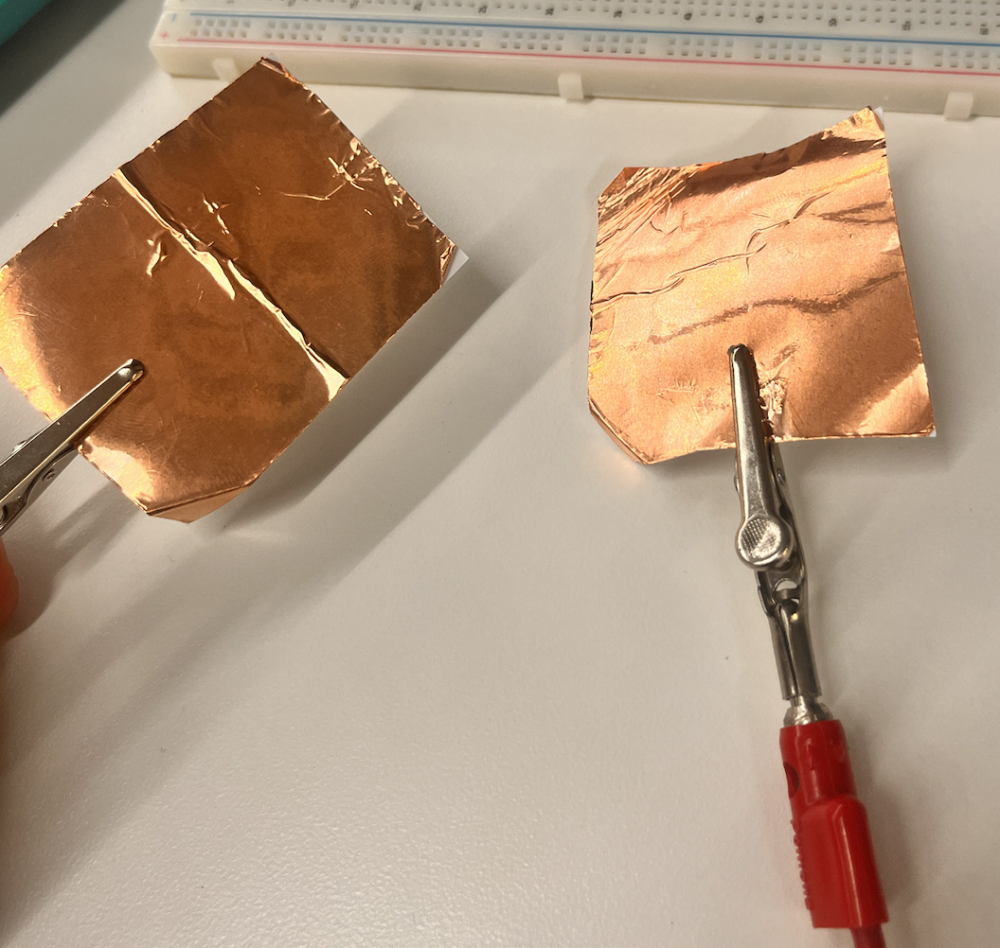
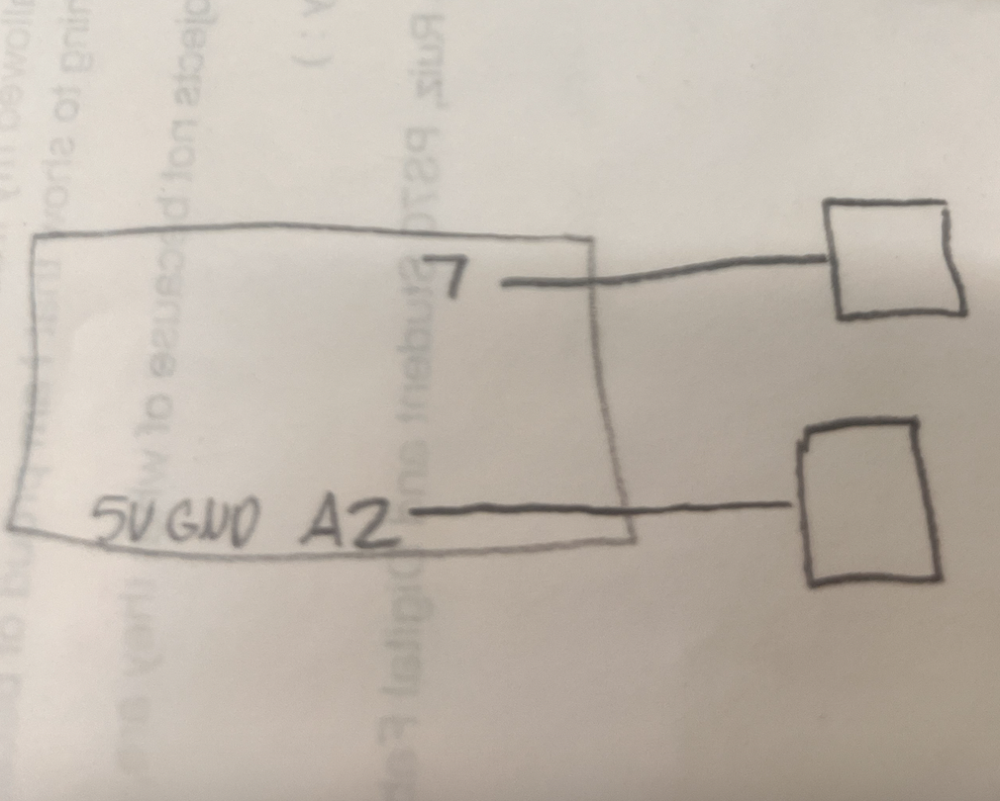
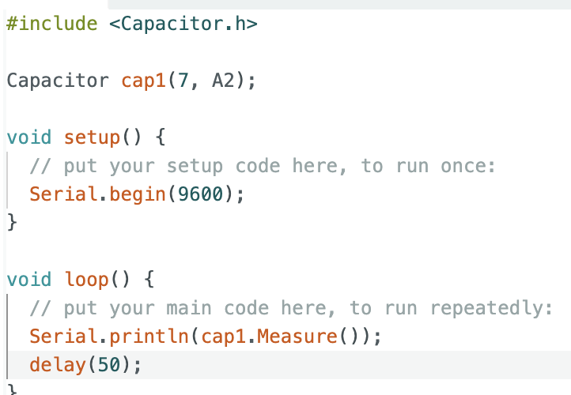
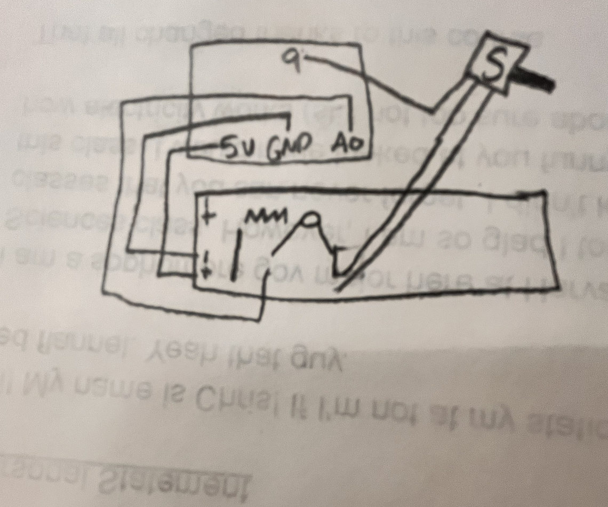

This week, I was tasked with creating a capacitative device as well as a device that uses some sort of sensor.
I decided that I could kill two birds with one stone and start working on my MVP (for my final puzzle box project).
For the capacitative sensor, I set up a very easy sensor like the one from lab but used a library to make the code the easiest it could be. I played with the serial plotter and got my sensor to work! The plot loosely corresponds to distance between the two copper sheets, although it is not precise.
  
I also set up a thermistor sensor to mirror what the capacitor does, but for temperature. I will show how I used the thermistor in next week's documentation because I combined it with electronic outputs!
We were also tasked to make files for CNC milling coming up in 2 weeks.